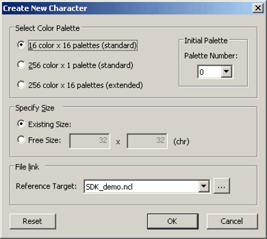
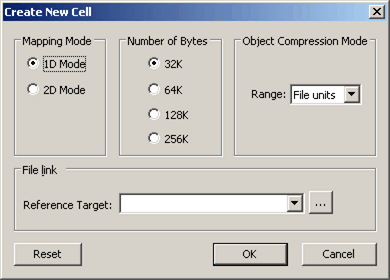
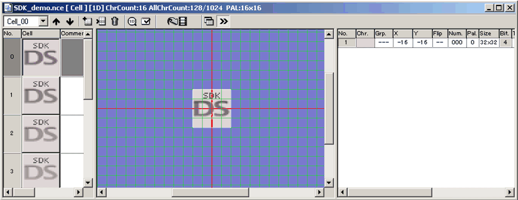
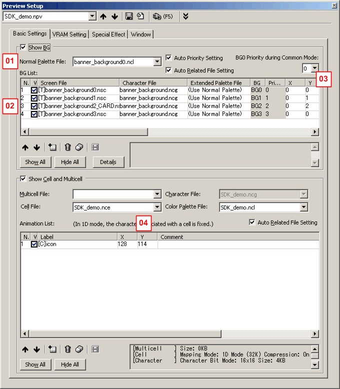

This page describes how to create necessary TWL banners for TWL applications using NITRO-CHARACTER.
In addition to this method, TWL banners can also be created using ntexconv.
For information on how to create TWL banners using ntexconv, see bannercvtr.
A sample is given below. The description uses this sample.
$TwlSDK/build/demos.TWL/tips/TWLBanner_anim1/banner/SDK_demo
Use a color palette setting of "16 color × 16 palette (standard)," and number 0.
A palette other than number 0 cannot be used.
For characters, use 16 colors x 16 palettes (standard).
For the size, specify 32 x 4 (chr) freesize.

For the cell mapping mode, use 1D mode (32K) and object compression mode for the entire file.

Place only one 32 x 32 bit object in a single cell. Place the object in the center for preview purposes.
There is no effect on top/bottom or left/right flipping, position, transparency, window, mosaic, rotation, scaling flags, or double-width flags.

Cell animation number 1 is converted. Cell animation operations (STOP/LOOP) are reflected in the banner icon.
The number of items in the sequence data must be 63 or fewer for a STOP animation, or 64 or fewer for a LOOP animation. The number of display frames in sequence data must be 255 or fewer.
Top/bottom and right/left flipping of sequence data, positioning, scaling, and rotation are not applied to the banner icon.
Use NITRO Viewer for previewing. Launch the following tool packaged with TWL-System.
% $TwlSystem/tools/NitroViewer/***_NITRO-Viewer_Controller.bat
Display is made in the upper screen by default. Switch the display to the lower screen using the L Button + Select Button.
When previewing along with a background for the TWL launcher screen, copy the following files in the sample to your own project folder.
$SDK_demo/ColorPalette/banner_background(0 to F).ncl
$SDK_demo/Character/banner_background.ncg
$SDK_demo/Character/Screen/banner_background0.nsc
$SDK_demo/Character/Screen/banner_background1.nsc
$SDK_demo/Character/Screen/banner_background2_CARD.nsc
$SDK_demo/Character/Screen/banner_background2_NAND.nsc
$SDK_demo/Character/Screen/banner_background3.nsc
Make the following preview settings. Preview settings used in the sample are described below.

Set the first file listed for the background and set the cell animation for the created banner in the animation list.
| Number | Description |
|---|---|
| 01 | The color of the frame surrounding the banner can be changed by changing the color palette. For TWL units, the color set using [User information]-[User color] under system settings is used. Each color palette corresponds to the color given by OS_FAVORITE_COLOR_*.
|
| 02 | The background displayed differs for card applications and NAND applications. For card applications, use banner_background2_CARD.nsc. For NAND applications, use banner_background2_NAND.nsc.
|
| 03 | Set the Y coordinate of banner_background1.nsc to 1 and the Y coordinate of banner_background2_****.nsc to 2. |
| 04 | When setting the cell animation, set the X coordinate to 128 and the Y coordinate to 114. (When the cell is located in the center) |
Banner (overview)
makebanner.TWL
ntexconv
bannercvtr
2011/04/08 Made changes in code to reflect removal of flip feature.
2008/11/28 Initial release.
CONFIDENTIAL